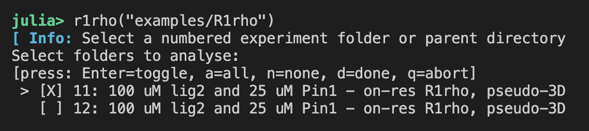

1D R1ρ Analysis
The R1rho module in NMRAnalysis.jl provides a graphical interface for the analysis of one-dimensional R1ρ relaxation dispersion experiments. This GUI allows you to load, visualize, and fit R1ρ data interactively.
Launching the R1ρ GUI
You can launch the R1ρ analysis GUI in several ways, depending on your workflow and data organization:
1. Launch with a Selection Dialog
If you call r1rho() with no arguments, a dialog will appear allowing you to select a directory containing your NMR experiments.
using NMRAnalysis
r1rho()2. Launch with a Starting Folder
You can provide a starting folder as an argument. The program will display a list of available NMR experiments in the terminal for you to select.
r1rho("example/R1rho")
3. Launch with a List of Specific Input Spectra
You can also provide a list of specific experiment folders or files for direct analysis.
r1rho(["example/R1rho/11", "example/R1rho/12"])
Filtering spin-lock strengths: minvSL and maxvSL
In on-resonance R1ρ experiments, very low spin-lock strengths can result in poor magnetization alignment, often observed as oscillations in the decay curves. Conversely, very high spin-lock strengths may introduce artifacts due to detuning. To improve the robustness of your analysis, you can use the minvSL and maxvSL keyword arguments to exclude problematic spin-lock strengths from the fit.
minvSL: Exclude spin-lock strengths below this value (in Hz). The default lower limit is 250 Hz.maxvSL: Exclude spin-lock strengths above this value (in Hz). By default, there is no upper limit.
For example, to exclude spin-lock strengths below 500 Hz and above 10 kHz:
r1rho(["example/R1rho/11", "example/R1rho/12"], minvSL=500, maxvSL=10_000)Or, when launching with a dialog:
r1rho(minvSL=800) # Exclude all spin-locks below 800 HzFiltering in this way helps ensure that only reliable data are included in the fit, improving the robustness of your analysis.
Adjusting the Display Size: scalefactor
The GUI display size can be adjusted using the optional scalefactor keyword argument. By default, this is set to :automatic, which uses a value of 2 for high-resolution (HiDPI/Retina) displays and 1 for standard displays. You can override this by specifying a numeric value:
r1rho(scalefactor=1.5) # Scale the display by 1.5xExample Usage
# Launch with dialog
r1rho()
# Launch with a specific folder
r1rho("data/R1rho_experiments")
# Launch with a list of experiments and custom scale
r1rho(["data/R1rho/11", "data/R1rho/12"], scalefactor=1.5)Citation
Placeholder for the associated publication. Please insert citation details here.